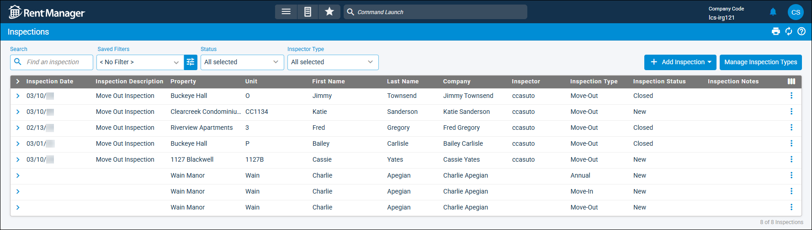

Source: https://rmxhelp.rentmanager.com/Topics/Express/CSH/Inspections.htm
Inspections (Page)
Performing inspections through Rent Manager allows you to streamline and standardize the inspections process by customizing it to fit your needs. For example, you can create service issues for items you notice during the inspection that need attention without leaving the Inspection feature.
Your customizations can be saved as inspection templates, which allow you to create inspections from the same starting point. Further, you can have multiple templates allowing you to create unique inspections with consideration to property, unit, or unit type.
Related Preferences
To use this feature in rmAppSuite Pro, you must purchase the Inspection and Service licensed features for rmAppSuite Pro. For more information, contact your sales representative at sales@rentmanager.com.
Once the features are purchased, they must be enabled in system preferences. For more information, refer to rmAppSuite Inspection (System Preferences).
Rent Manager Online (RMO) users can complete inspections remotely on your mobile device or tablet via the Inspection feature in rmAppSuite Pro. This feature allows you to conduct an inspection, make notes, take pictures, and schedule work orders—all from the site of the inspection. Your work in the field is then synced back to Rent Manager over your mobile network. To learn more about rmAppSuite Pro, contact sales@rentmanager.com.
Related Privileges
| Group | Privilege | Column |
|---|---|---|
| Inspections | Inspections | View |
For more information, refer to Control User Access.
To view the Inspections page, go to  arrow_forward Services arrow_forward Inspections arrow_forward Inspections.
arrow_forward Services arrow_forward Inspections arrow_forward Inspections.
On the Inspections page, each inspection record displays on a row with information organized into columns. Click on an inspection to open the Inspection details page, where information specific to that inspection is available.

Filter Options
The following filter options are used to display inspections on this page.
| Filter | Description |
|---|---|
|
Inspector Type |
Check each desired inspector type (Management for Rent Manager user assigned inspections and/or Tenant for tenant assigned inspections) to be included in the list. By default both types are selected. |
|
Saved Filters |
Select a previously-saved filter from the list. Alternatively, click |
|
Search |
Enter the desired search criteria to display results that include the criteria. |
|
Status |
Check each desired inspection status (e.g., In Progress, Pending Maintenance, Closed, Expired) to be included in the list. By default all statuses are selected. |
Column Descriptions
The following columns are available on this page. By default, some columns display only if added via  .
.
|
Default Column |
Description |
|---|---|
|
Company |
The Company Name of the commercial tenant account associated with the inspection. If the tenant is not commercial, the tenant's first and last name display. |
|
First Name |
The first name of the tenant associated with the inspection, if applicable. |
|
Inspection Date |
The date the inspection is to take place. For tenant self-inspections, the date the inspection was submitted displays. If the tenant has not submitted the inspection, the column displays blank. |
|
Inspection Description |
Additional information regarding the inspection. |
|
Inspection Notes |
Any additional notes or comments regarding the inspection, as entered on the Notes tile of the inspection's details page. |
|
Inspection Status |
The current user-created Status of the inspection. |
|
Inspection Type |
The user-created Type of inspection being performed. |
|
Inspector |
The user responsible for performing the inspection. For tenant self-inspections, the column displays blank. |
|
Last Name |
The last name of the tenant associated with the inspection, if applicable. |
|
Property |
The name of the property at which the inspection is set to occur. |
|
Unit |
The name of the unit to be inspected. |
|
Optional Column |
Description |
|
Created By |
The username of the user who created the inspection. |
|
Created Date |
The date on which the inspection was first saved. |
|
Date Submitted |
The date on which the inspection was submitted by setting the Status to Closed. |
|
Days Until Next Move In |
The number of days from today's date to the next date on which a tenant is scheduled to move in to the unit associated with the inspection. |
|
Expiration Date |
The date the tenant self-inspection expires. For management inspections (assigned to a Rent Manager user), the column displays blank. |
|
Last Updated |
The date on which the inspection was most recently updated and saved. |
|
Make Ready |
A Check displays if the inspection is associated with a make ready process. For more information, refer to Set Up the Make-Ready Board for Unit Turnover. |
|
Make Ready Action |
The name of the make ready action associated with the inspection. For more information, refer to Make-Ready Actions (Page). |
|
Make Ready Completion Date |
The date on which the make ready process was completed, as entered on the Make Ready Details page's Completed field. For more information, refer to Make Ready Details (Page). |
|
Make Ready Manager |
The name of the Manager of the make ready process associated with the inspection. |
|
Make Ready Priority |
A Check displays if the inspection is associated with a make ready process is marked as high priority. |
|
Make Ready Start Date |
If applicable, the Start Date of the make ready process associated with the inspection. |
|
Move Out |
The Move Out Date as listed on the associated unit's Occupancy tile. |
|
Next Move In |
The Move In Date as listed on the associated unit's Occupancy tile. |
|
Scheduled Date |
The date on which the inspection is planned to take place. For management inspections, this date is used for the make ready process as well as the Management Inspection Scheduled automated notification. For more information, refer to Make Ready Board (Page) and Management Inspection Scheduled (Automated Notification). For tenant self-inspections, the column displays blank. |
|
Submitted By User |
The name of the Rent Manager user who submitted the inspection by setting the Status to Closed. |
|
Submitted By Web User |
The name of the web user who submitted the tenant self-inspection by selecting Submit on the inspection in rmResident. |
|
Updated By |
The username of the user who most recently updated and saved the inspection. |